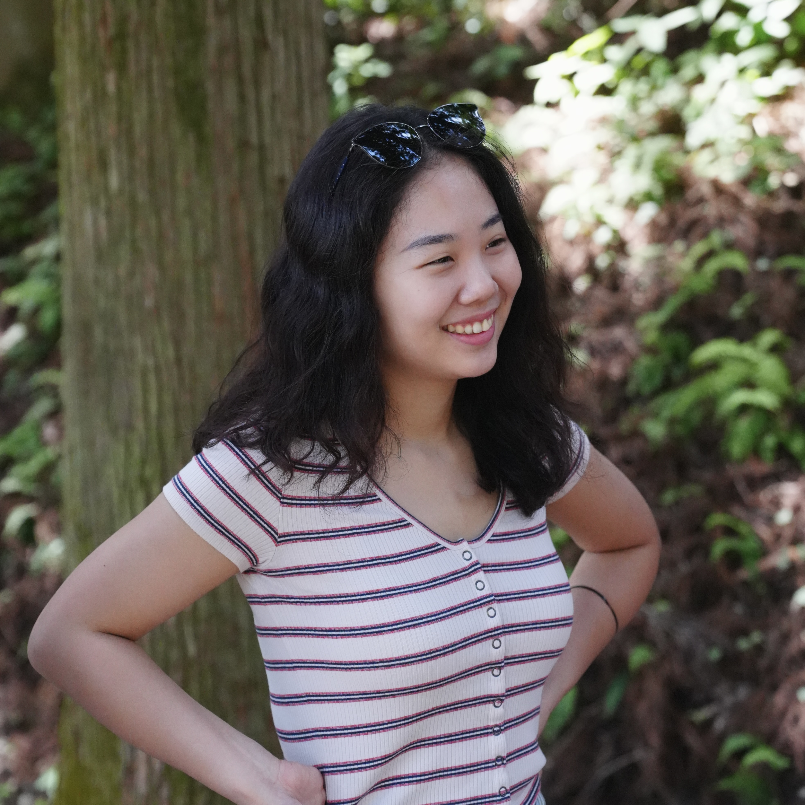

Hyeonji Cho (M.A.)

/ hee-uhnjee cho /
PhD Student, Human Development and Family Science
Syracuse University (NY, USA)


Biography
I am a PhD student in Human Development and Family Science at Syracuse University and a graduate student associate at the Aging Studies Institute (ASI). I earned both my Master’s and Bachelor’s degrees from Seoul National University in South Korea. My research interests include late-life intergenerational relationships, family demography, and family policy.
Selected Publications
- Cho, H. (2025). Younger grandparents provide less support to their grandchildren now than in the past, but support among older grandparents has remained stable. Population Health Research Brief Series, 273.
- Cho, H., & Chin, M. (2024). Trends and characteristics of four types of familial financial support among Korean sandwiched middle-aged adults. Korea Journal of Population Studies, 47(3), 93–115.
- Cho, H., Kim, N., & Kim, K. (2024). The role of late-life work among widowed adults in Korea: A buffer or burden for widow(er)s’ health? Journal of Applied Gerontology, 43(11), 1621–1629.
- Cho, H., & Chin, M. (2023). Characteristics and life satisfaction of young adults living with their parents by relative income status. Journal of Families and Better Life, 41(3), 81–93.